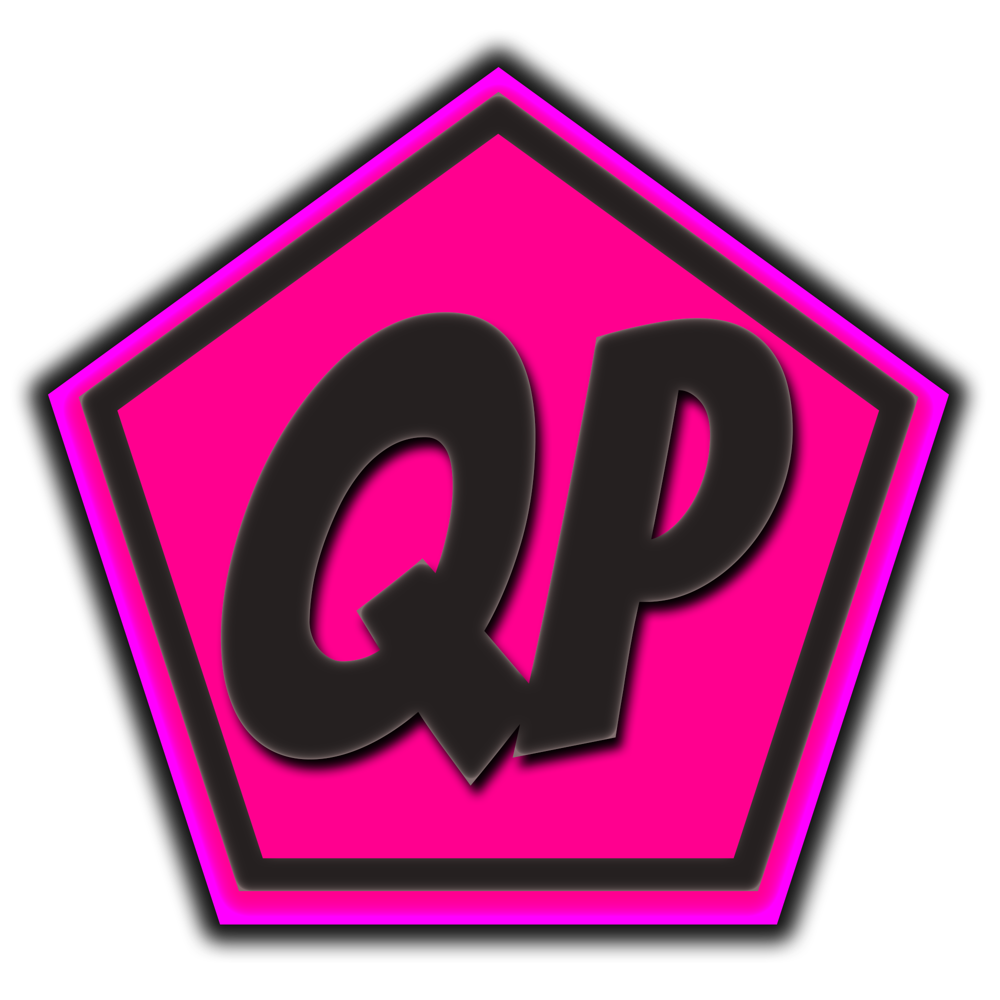

Open Source 📖
Why make JS:QP Open Source?
We believe that open sourcing JS Quick Pack was a good idea for several reasons.
Firstly, open source software allows for transparency and collaboration within the community.
This means that anyone can view and contribute to the code, leading to a more robust and reliable tool.
Additionally, open source software is a tremendous help to texture pack makers because it allows them to access the source code and make custom modifications to fit their specific needs.
This level of customization and flexibility is not possible with closed source software.
Overall, open sourcing JS Quick Pack benefits both the community and texture pack makers by fostering collaboration and innovation.
A bit about the inner workings of JS:QP.
JS Quick Pack is built using Python as it's native language for the backend and HTML, CSS, and JavaScript as the frontend.
We use our own websocket bridge API to link the JavaScript and Python code together.
You do not need to know Python in order to contribute to JS Quick Pack, we will allow contributors to work in vanilla JavaScript.
However, if you do so we do recommend making it modular and submitting it to a separate repository within the JS:QP GitHub team.
This allows us and you to better organize and maintain the codebase as you won't have to dig into client code.
You can just work on your feature as if it was a website and we'll handle the backend implementation.
Anyways, JS Quick Pack is a powerful tool that combines the versatility of Python with the accessibility of frontend web technologies like HTML and JavaScript.
Some Contribution Guidelines
- All code submissions must be licensed under the same open source license as the project.
- BEFORE you contribution make sure to open an issue or talk to use on Discord beforehand to why you think it's relevant.
- Submitted code should be well-commented!
- All code changes should be tested thoroughly before submission to ensure they do not break existing functionality.
- Submissions should be made through a pull request or separated repository on the JS:QP github team. (READ THE ABOVE SECTION FOR WHY)
- Submissions should include a brief description of the changes made.
- Any submission that does not adhere to these rules may be rejected by us.